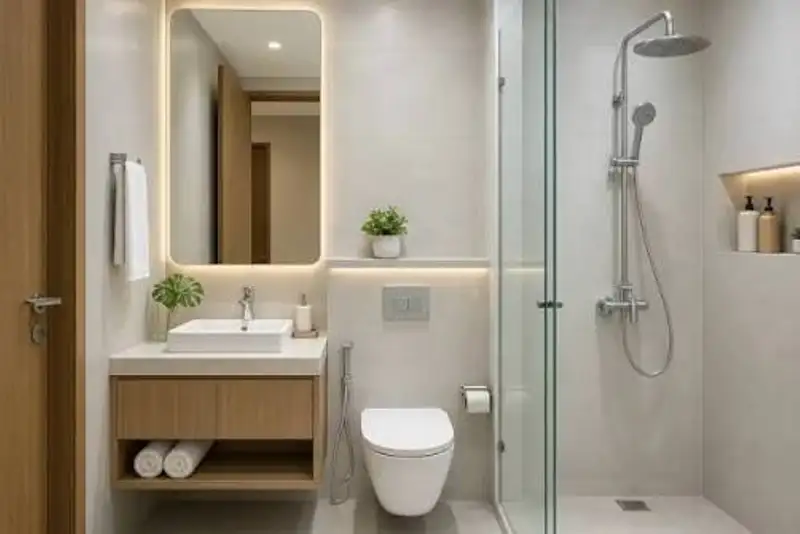

Daftar Isi
- Apa yang Dimaksud dengan Standar Konstruksi Kamar Mandi Lantai 2?
- Mengapa Kamar Mandi Lantai 2 Berbeda dari Lantai 1?
- Bagaimana Standar Struktur dan Dimensi Lantai?
- Bagaimana Standar Waterproofing dan Kemiringan Lantai?
- Bagaimana Standar Instalasi Plumbing dan Drainase?
- Apa Saja Standar Ventilasi, Pencahayaan, dan Keselamatan?
- Material Apa yang Sesuai untuk Kamar Mandi Lantai 2?
- Bagaimana Tahapan Pembangunan yang Benar?
- Perbedaan Sistem Pelat Beton vs Modular
- Apa Kesalahan Umum yang Sering Terjadi?
- Bagaimana Tips Praktis Memastikan Kualitas?
- FAQ
Standar konstruksi kamar mandi lantai 2 mencakup struktur pelat yang kuat, waterproofing menyeluruh, kemiringan lantai, instalasi plumbing rapi, ventilasi memadai, dan pengujian sebelum finishing.
- Kamar mandi lantai 2 memerlukan pelat beton bertulang yang dihitung insinyur struktur, karena beban air dan perlengkapan sanitasi bekerja terus-menerus.
- Waterproofing harus menyeluruh pada lantai dan sebagian dinding, lalu diuji genangan air sebelum keramik dipasang.
- Plumbing wajib memiliki kemiringan, sambungan kedap, perangkap air, dan uji tekan sebelum ditutup.
- Ventilasi, lantai anti selip, dan proteksi listrik menjaga keselamatan serta kesehatan penghuni.
- Pengawasan tiap tahap dan dokumentasi pekerjaan menekan risiko kebocoran yang mahal diperbaiki.
Apa yang Dimaksud dengan Standar Konstruksi Kamar Mandi Lantai 2?
Standar konstruksi kamar mandi lantai 2 adalah ketentuan teknis untuk struktur, kedap air, drainase, dan keselamatan agar ruang basah di lantai atas aman dan awet.
Standar ini bukan satu aturan tunggal. Ia merupakan gabungan acuan SNI, praktik konstruksi yang telah teruji, dan spesifikasi teknis produsen material. Cakupannya meliputi struktur pelat, waterproofing, kemiringan lantai, plumbing, drainase, ventilasi, kelistrikan, dan pengujian.
Kamar mandi lantai 2 adalah ruang basah yang berada di atas ruang lain. Karena itu, kegagalan kecil seperti rembesan di sudut lantai dapat berdampak besar pada plafon, dinding, dan instalasi listrik di lantai bawah.
Pembaca yang membutuhkan acuan resmi dapat menelusuri katalog standar di situs Badan Standardisasi Nasional. Artikel ini bersifat informasi umum dan tidak menggantikan perhitungan insinyur struktur maupun ketentuan pemerintah daerah setempat.
Mengapa Kamar Mandi Lantai 2 Berbeda dari Lantai 1?
Kamar mandi lantai 2 berbeda karena berada di atas ruang lain, sehingga kebocoran merusak plafon, beban air membebani struktur, dan perbaikan jauh lebih sulit.
Di lantai 1, lantai kamar mandi bertumpu pada tanah yang telah dipadatkan. Di lantai 2, lantai kamar mandi adalah pelat yang menggantung di atas ruang lain. Air yang bocor akan tampak sebagai noda, jamur, atau plafon yang menggembung di ruangan bawah.
Beban juga berbeda. SNI 1727:2020 tentang beban desain minimum untuk bangunan gedung menetapkan beban hidup minimum area hunian pada umumnya sekitar 1,92 kN/m2, setara sekitar 196 kg per meter persegi (Sumber: SNI 1727:2020, edisi 2020). Angka ini belum memperhitungkan genangan air, bak mandi, dan lapisan finishing yang tebal.
Sebagai gambaran, air bermassa sekitar 1 kg per liter. Genangan setinggi 5 cm pada lantai seluas 4 m2 berarti sekitar 200 liter atau 200 kg (Sumber: perhitungan berdasarkan massa jenis air sekitar 1.000 kg per meter kubik, 2026). Bak mandi berisi air dan penggunanya menambah beban lebih besar lagi.
Perbaikan di lantai atas juga lebih rumit. Tukang harus membongkar keramik dan lapisan kedap air sambil melindungi ruang di bawahnya.
Bagaimana Standar Struktur dan Dimensi Lantai Kamar Mandi Lantai 2?
Struktur kamar mandi lantai 2 idealnya berupa pelat beton bertulang yang dihitung insinyur struktur, dengan turun lantai dan bukaan pipa direncanakan sejak awal.
Pelat kamar mandi umumnya dirancang lebih rendah daripada pelat ruang sekitarnya. Teknik ini disebut turun lantai. Selisih tinggi, biasanya beberapa sentimeter hingga belasan sentimeter tergantung desain, memberi ruang bagi waterproofing, screed berkemiringan, dan keramik tanpa membuat lantai kamar mandi lebih tinggi dari koridor.
Bukaan untuk pipa dan floor drain harus dipetakan sejak gambar struktur. Membobok balok atau pelat setelah dicor dapat melemahkan struktur dan merusak tulangan. Insinyur struktur perlu memastikan adanya tulangan tambahan di sekitar bukaan.
Dinding ruang basah dapat berupa pasangan bata ringan atau bata merah dengan plester kedap air. Pada bagian bawah dinding, ambang beton sering dipasang untuk membantu menahan air. Ukuran ruang sekitar 1,5 x 2 meter lazim dipakai untuk kamar mandi yang memuat kloset, area shower, dan wastafel.
Setiap keputusan struktur sebaiknya ditinjau oleh insinyur yang berkompeten.
Bagaimana Standar Waterproofing dan Kemiringan Lantai?
Waterproofing standar melapisi seluruh lantai dan dinding hingga ketinggian tertentu, diikuti kemiringan lantai sekitar satu sampai dua persen menuju floor drain dan uji genangan air.
Waterproofing adalah lapisan kedap air yang mencegah air menembus beton. Lapisan ini dipasang pada seluruh permukaan lantai, sudut, dan dinding hingga ketinggian tertentu. Area shower biasanya dilapisi lebih tinggi daripada area kering.
Kemiringan lantai sekitar 1 sampai 2 persen berarti permukaan turun 1 sampai 2 cm untuk setiap 1 meter jarak menuju floor drain (Sumber: praktik lazim konstruksi bangunan gedung, 2026). Kemiringan yang terlalu kecil menyebabkan genangan. Kemiringan yang terlalu curam membuat keramik sulit dipasang dan terasa tidak nyaman.
Setelah waterproofing mengering, lantai digenangi air selama sekitar 24 sampai 72 jam. Pemeriksa memastikan tidak ada rembesan pada plafon lantai bawah sebelum keramik dipasang.
Bagaimana Standar Instalasi Plumbing dan Drainase?
Instalasi plumbing standar memisahkan jalur air bersih dan air buangan, memakai kemiringan pipa buangan, perangkap air, serta ventilasi pipa agar aliran lancar tanpa bau.
Pipa air bersih membawa air bertekanan menuju kran, shower, dan kloset. Pipa air kotor membawa air buangan dengan gaya gravitasi, sehingga wajib memiliki kemiringan yang konsisten. Pipa air kotor berdiameter kecil umumnya dipasang dengan kemiringan sekitar 2 persen.
Perangkap air atau water seal pada floor drain dan sanitary menahan bau dari saluran pembuangan. Pipa ventilasi menjaga tekanan udara sehingga air di perangkap tidak tersedot. Referensi umum yang sering dipakai adalah SNI 8153:2015 tentang sistem plambing pada bangunan gedung.
Pipa yang ditanam dalam pelat atau dinding sebaiknya diuji tekan terlebih dahulu. Akses pembersihan juga perlu disediakan agar penyumbatan dapat ditangani tanpa membongkar keramik.
Apa Saja Standar Ventilasi, Pencahayaan, dan Keselamatan?
Kamar mandi lantai 2 membutuhkan ventilasi alami atau mekanis, pencahayaan cukup, lantai anti selip, dan proteksi listrik agar ruang basah tetap sehat dan aman digunakan.
Ruang basah yang lembap tanpa sirkulasi udara mudah berjamur. Jendela atau lubang angin ke luar bangunan menjadi solusi utama. Bila kamar mandi berada di tengah denah, exhaust fan yang menyalurkan udara ke luar bangunan dapat menjadi pilihan.
Keselamatan dari kecelakaan terpeleset perlu diperhatikan. Keramik lantai sebaiknya bertekstur anti selip, terutama di area shower. Untuk keluarga dengan lansia atau anak kecil, pegangan dinding dapat dipertimbangkan.
Kelistrikan di ruang basah menuntut kehati-hatian. Stop kontak sebaiknya ditempatkan jauh dari percikan air. Pemutus arus bocor dan sistem pembumian yang baik membantu mengurangi risiko sengatan listrik. Pekerjaan listrik sebaiknya ditangani teknisi yang kompeten.
Material Apa yang Sesuai untuk Kamar Mandi Lantai 2?
Material kamar mandi lantai 2 sebaiknya tahan air, ringan, dan awet, seperti keramik berdaya serap rendah, perekat khusus, nat kedap air, dan pipa berstandar SNI.
Keramik dengan daya serap air rendah lebih tahan terhadap kelembapan. Perekat keramik berkualitas membantu mencegah keramik berongga dan lepas. Nat epoksi atau nat kedap air mengurangi penyerapan air pada sela keramik.
Material waterproofing dipilih sesuai kondisi. Cementitious coating, membran cair, dan membran lembaran memiliki kelebihan masing-masing. Pemilihan didasarkan pada lokasi, kondisi permukaan, dan petunjuk pabrikan.
Pipa PVC berstandar SNI umum dipakai untuk air kotor. Pipa air bersih dapat memakai PPR atau PVC tekanan sesuai kebutuhan. Bobot material juga penting, karena keramik besar dan screed tebal menambah beban pada pelat.
Bagaimana Tahapan Pembangunan yang Benar?
Tahapan pembangunan kamar mandi lantai 2 dimulai dari perencanaan struktur dan tata letak, dilanjutkan pemasangan pipa, waterproofing, uji genangan, keramik, sanitary, lalu pengujian akhir.
Urutan kerja yang lazim adalah sebagai berikut:
- Perencanaan gambar struktur, tata letak sanitary, dan jalur pipa.
- Pengecoran pelat dengan turun lantai dan bukaan pipa yang sudah dipasang sleeve.
- Pemasangan pipa air bersih dan air kotor, diikuti uji tekan dan uji aliran.
- Pembuatan screed dengan kemiringan menuju floor drain.
- Aplikasi waterproofing pada lantai dan dinding.
- Uji genangan air selama sekitar 24 sampai 72 jam.
- Pemasangan keramik dan nat.
- Pemasangan sanitary, kran, dan perlengkapan, lalu uji fungsi menyeluruh.
Melewatkan satu tahap, terutama uji genangan, sering menjadi penyebab masalah di kemudian hari. Dokumentasi foto setiap tahap membantu pemilik memantau kualitas.
Apa Perbedaan Sistem Pelat Beton Konvensional dan Alternatif Lain?
Pelat beton konvensional unggul dalam kedap air dan kekakuan, sedangkan sistem lantai ringan atau modular lebih cepat dipasang tetapi menuntut detail sambungan dan waterproofing cermat.
Pemilihan sistem lantai bergantung pada struktur bangunan, anggaran, dan waktu pengerjaan. Untuk rumah tinggal, pelat beton bertulang masih menjadi pilihan yang paling lazim. Sistem alternatif tetap dapat dipakai selama perhitungan struktur dan detail waterproofing dipenuhi.
Apa Kesalahan Umum yang Sering Terjadi?
Kesalahan umum pada kamar mandi lantai 2 meliputi waterproofing tidak menyeluruh, kemiringan lantai keliru, pipa tanpa uji tekan, ventilasi minim, dan pengawasan kerja yang lemah.
Berikut kesalahan yang paling sering ditemui di lapangan:
- Waterproofing tidak menyeluruh. Sudut, area sekitar pipa, dan ambang pintu terlewat.
- Kemiringan lantai keliru. Air menggenang atau justru mengalir ke arah pintu.
- Uji genangan dilewati. Keramik langsung dipasang sebelum kebocoran diperiksa.
- Pipa tidak diuji. Kebocoran baru ketahuan setelah pipa tertutup.
- Floor drain tanpa perangkap air. Bau saluran naik ke kamar mandi.
- Bukaan pelat dibobok sembarangan. Struktur melemah dan tulangan terpotong.
- Pengawasan lemah. Tidak ada dokumentasi dan tidak ada pemeriksaan tiap tahap.
Bagaimana Tips Praktis Memastikan Kualitas?
Kualitas kamar mandi lantai 2 dapat dipastikan lewat gambar kerja jelas, material terverifikasi, dokumentasi tiap tahap, uji genangan dan tekan, serta kontrak dengan masa pemeliharaan.
Beberapa langkah praktis yang dapat diterapkan pemilik bangunan:
- Minta gambar kerja yang memuat posisi sanitary, floor drain, dan kemiringan lantai.
- Catat merek dan tipe material sebelum pekerjaan dimulai.
- Foto setiap tahap, terutama pipa sebelum ditutup dan waterproofing sebelum keramik.
- Hadiri atau wakilkan saat uji genangan dan uji tekan dilakukan.
- Tuangkan lingkup pekerjaan, spesifikasi, dan masa pemeliharaan dalam kontrak tertulis.
- Simpan sisa keramik dan catatan produk untuk kebutuhan perbaikan di masa depan.
Pemilik bangunan yang ragu dapat meminta tinjauan dari konsultan atau pengawas independen.